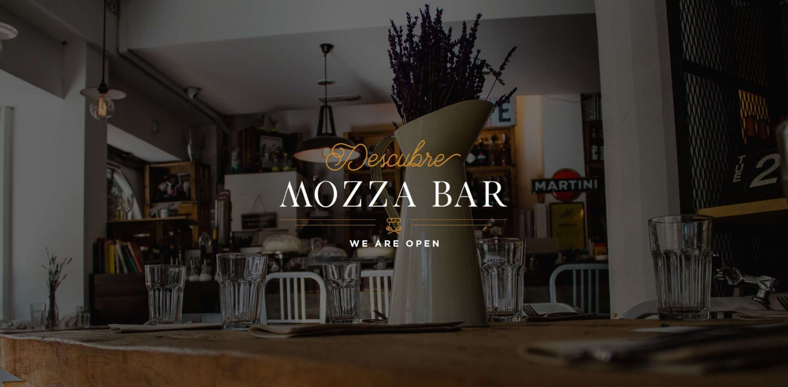

Concept
Situado en pleno Barrio de Salamanca, Mozza Bistró es todo sabor y buen ambiente.
Saborea algunos de los platos más populares de la gastronomía española y disfruta de nuestro guiño a la cocina internacional, que incluye algunas de las recetas más famosas de la cocina italiana y asiática.
Una combinación que convierte nuestro restaurante, en una opción estupenda para todos los gustos. Siendo fieles nuestros valores y raíces, elaboramos todos nuestros platos con productos frescos y de temporada, para que la calidad y el sabor sean siempre lo principal.